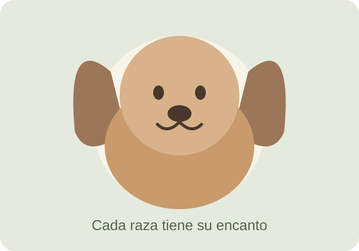
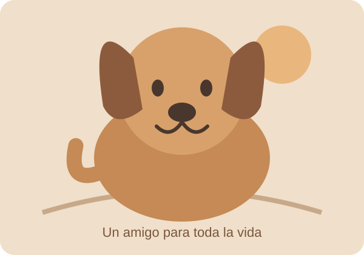
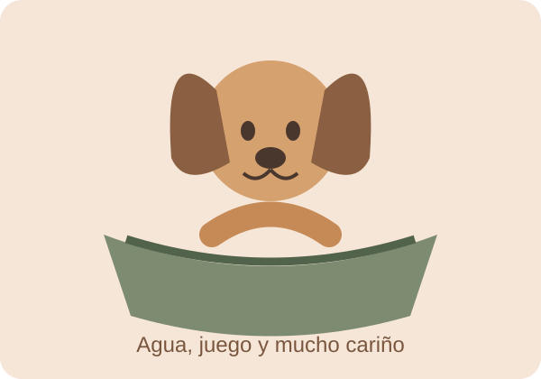

Labrador
Suele ser amigable, juguetón y muy sociable. Disfruta convivir con las personas.
Descubre lo increíble que es el mundo de los perros y aprende cómo darles una vida feliz y saludable.
Explorar ahora →
BIENVENIDO A MUNDO CANINO
Los perros son animales inteligentes, sociables y llenos de energía. Con cariño, atención y buenos cuidados, pueden convertirse en grandes compañeros.
CONOCE SUS PERSONALIDADES
Cada perro es único, sin importar su tamaño o raza.

Suele ser amigable, juguetón y muy sociable. Disfruta convivir con las personas.

Es pequeño, alerta y lleno de personalidad. Necesita atención y un trato cuidadoso.
Se caracteriza por ser cariñoso, activo y generalmente paciente con la familia.
UNA VIDA SALUDABLE
¿SABÍAS QUE...?
Su sentido del olfato es mucho más desarrollado que el de las personas.
Usan sonidos, posturas y movimientos para expresar cómo se sienten.
El juego y el refuerzo positivo ayudan a su aprendizaje.
UN POCO DE TERNURA